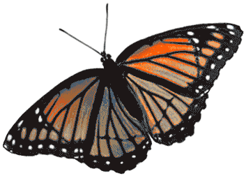
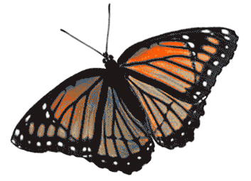
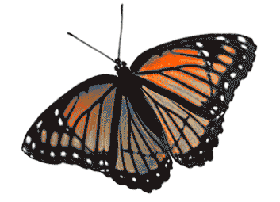
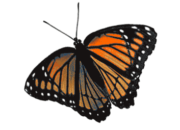

Butterfly
Why are they called butterflies?
Shouldn't they be flutter-bys?
but-ter-fly
--noun
- any of numerous diurnal insects of the order Lepidoptera, characterized by clubbed antennae, a slender body, and large, broad, often conspicuously marked wings.
- a person who flits aimlessly from one interest or group to another: a social butterfly.
- butterflies, ( used with a plural verb ) Informal . a queasy feeling, as from nervousness, excitement, etc.



